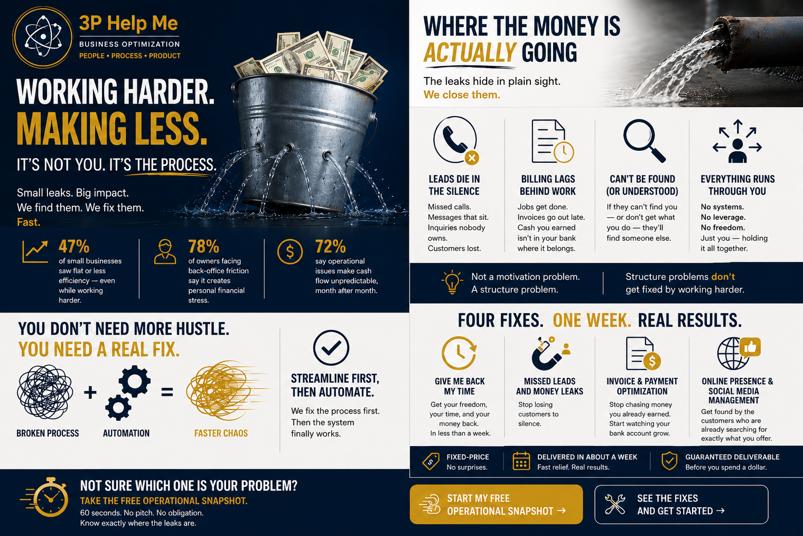

You’re not failing. You’re bleeding in places you can’t see.
Effort isn’t the problem. You have plenty of that — more than most people could survive. The problem is that hard work poured into a broken process doesn’t fix the process. It just makes you more tired while the same leaks keep leaking.
47%
of small businesses say operations stayed flat or got less efficient over the past year — even while owners worked just as hard, or harder.
78%
of owners dealing with back-office friction say it creates direct personal financial stress. Not business stress. Personal stress — the kind that follows you home.
72%
say operational issues make their cash flow unpredictable, month after month — so even a “good” month never quite feels safe.
Where the money is actually going
In almost every small business we’ve looked at, the leak hides in one of a handful of places.
A lead comes in — and quietly dies.
A missed call, a message that sits too long, an inquiry nobody owns. You didn’t lose that customer to a competitor. You lost them to silence.
Work gets finished — and billing lags behind it.
The job’s done, the customer’s happy, and somehow the invoice doesn’t go out for another week. Multiply that gap by every job this month and you’re looking at real cash sitting somewhere it shouldn’t be.
Nobody can find you online.
In a world where almost every buying decision starts with a phone search, an invisible or outdated presence isn’t a minor gap — it’s customers who never even knew you existed.
Everything still runs through you.
Every decision, every question, every “can you just handle this real quick” — because no one built the business to run without you standing in the middle of it.

You don’t need more hustle. You need a real fix.
Most advice tells you to buy new software, hire someone, or “just automate it.” But automating a broken process doesn’t fix it — it just makes the mess move faster. The tool isn’t the problem. The process underneath it is.
Streamline first, then automate.
That’s the whole philosophy behind how 3P works — so when a system finally does get put in place, it’s actually solving something instead of speeding up chaos.
This doesn’t have to take months, or thousands of dollars.
You don’t need a six-month engagement or an open-ended retainer to get real relief. You need one defined problem, fixed, fast — fixed-price, delivered in about a week, with a guaranteed deliverable before you spend a dollar. No open-ended hourly billing. No guessing what it’ll cost.